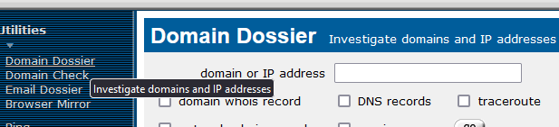
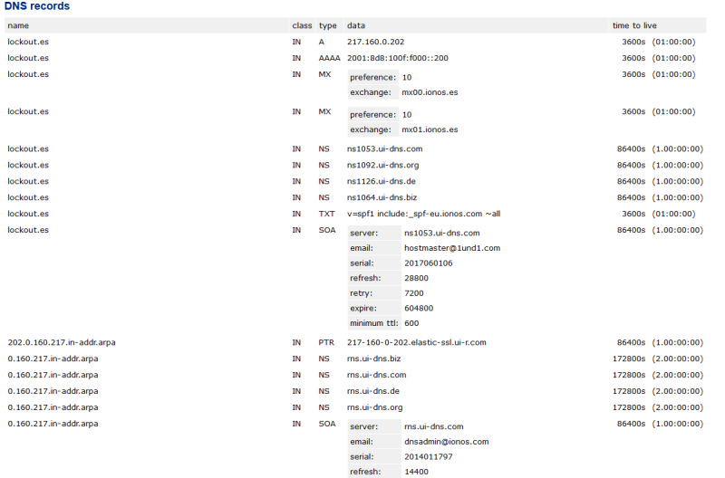
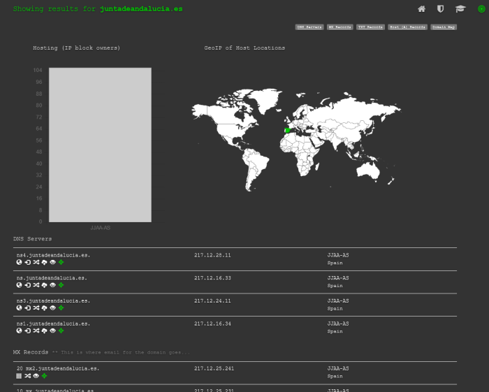
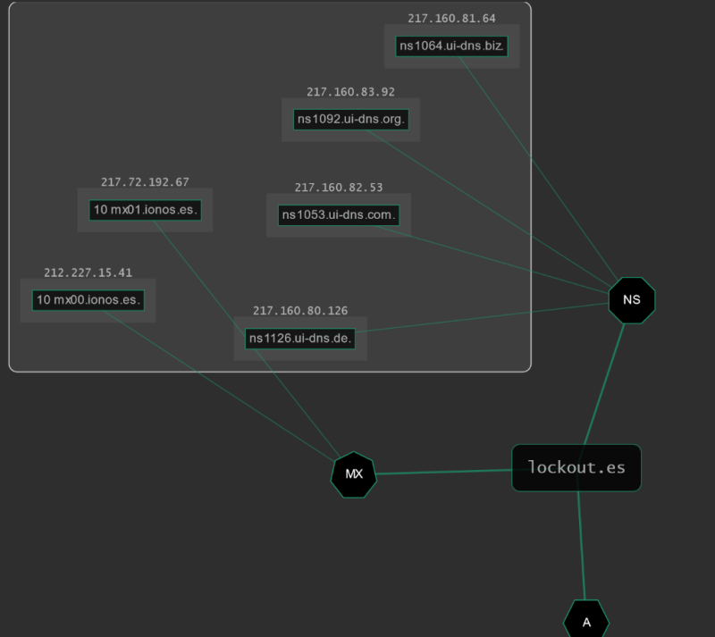

Las siguientes herramientas son aplicaciones web.
Las técnicas son muy sencillas que simplemente consisten en consultar toda la información de los diferentes DNS servers para un dominio concreto.


Otra aplicación web mas completa puede ser:

La mejor parte de esta herramienta es el grafo.
